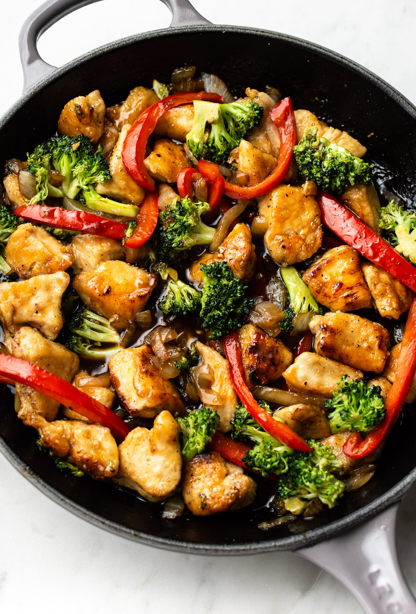
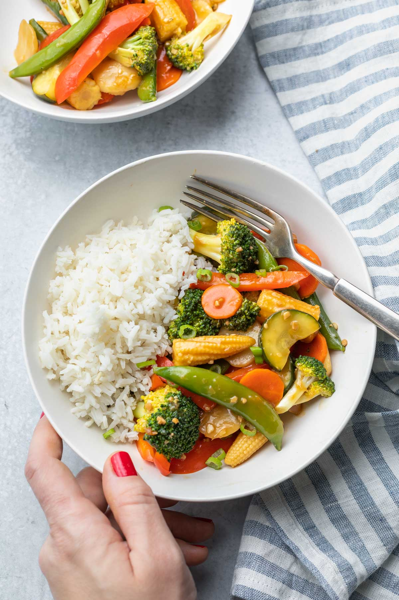

Stir Fry sauce

An image of Teriyaki-chicken-stir-fry and Sweet chicken-style stir fry
If you are looking for a simple and easy stir fry sauce recipe then you are going to flip for this sauce. With rice vinegar, garlic, brown sugar, and a few other ingredients you are going to have a flavorful sauce that is perfect for mixed vegetables or pork. Makes for about 2 servings.
Ingredients
- Vegetables: Sweet pepper, Brocolli, Onions, Carrot, (optional)
- Your choice of protein: Beef, Chicken or shrimp
- 1 tbsp reduced-salt soy sauce or sweet chilli sauce
- 2 tsp olive oil
- Salt
- Maggi or MSG
Cooking Instructions
- In a medium pan, pour boiling water over the broccoli then boil for 4 mins.
- Heat the olive oil in a non-stick wok and stir-fry the ginger, garlic and onion for 2 mins, add the mild chilli powder and stir briefly
- Add the vegetarian, chicken-style pieces and stir-fry for 2 mins more. Drain the broccoli and reserve the water
- Tip the broccoli into the wok with the soy, honey, red pepper and 4 tbsp broccoli water then cook until heated through.
- Meanwhile, heat the rice or your choice of carbohydrate, following the pack instructions and serve with the stir-fry.
- Voila! Your meal is ready, Enjoy!!

Return to top of page
Return to main page